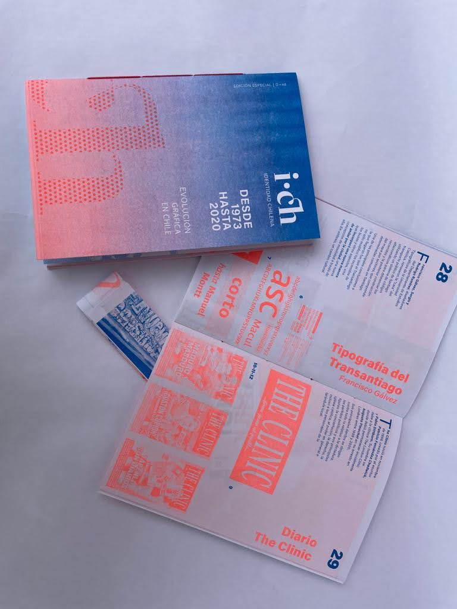
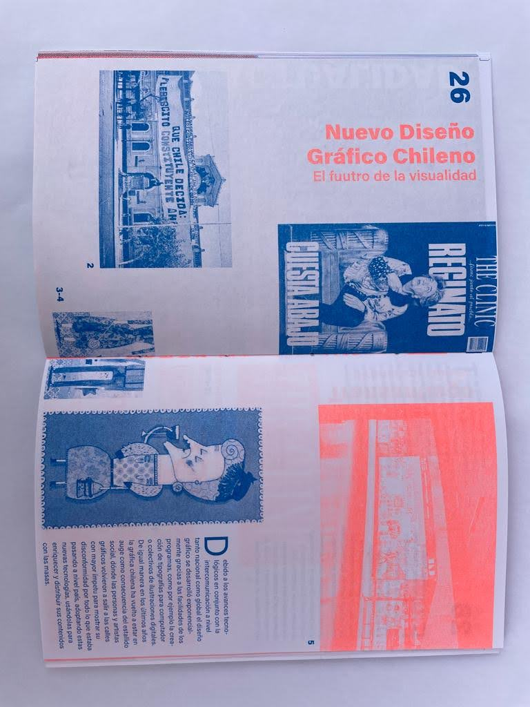
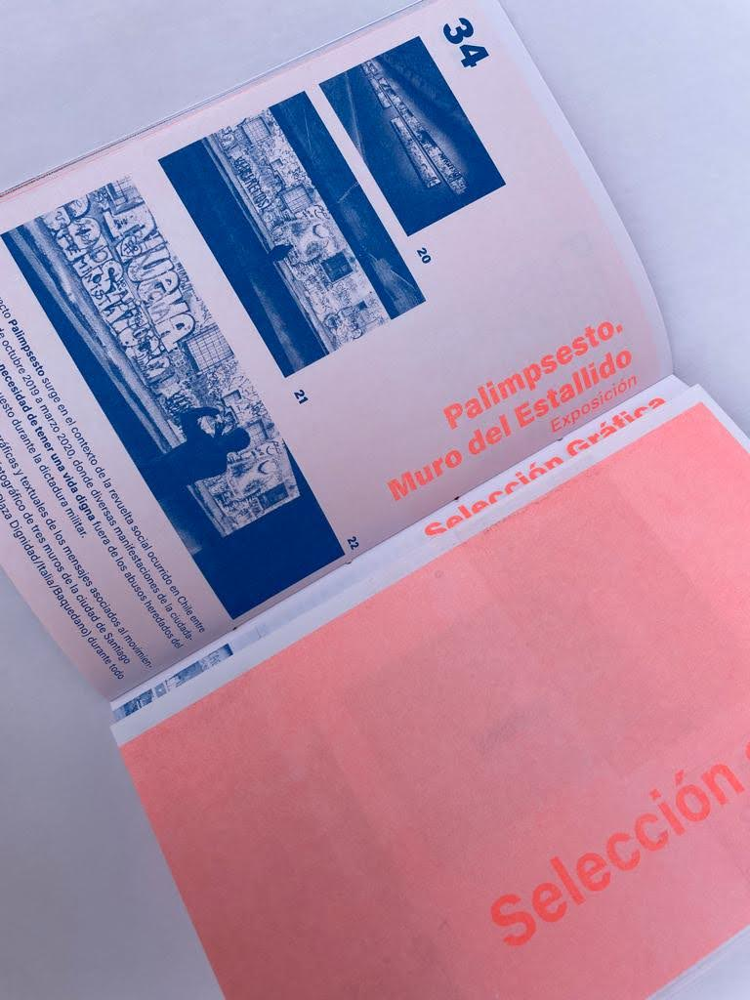
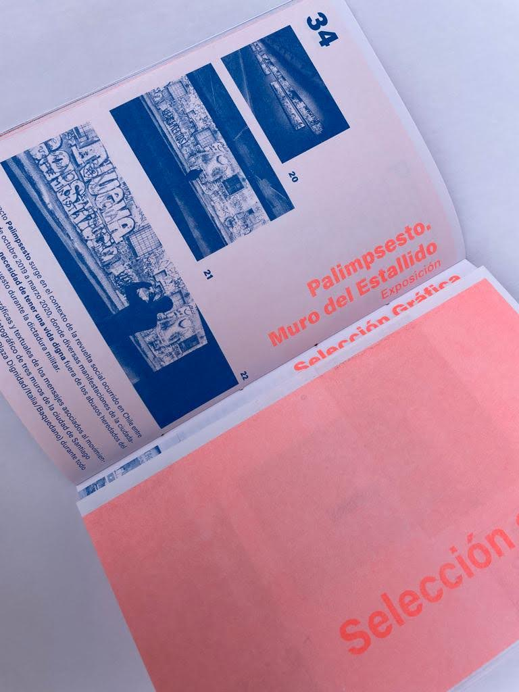
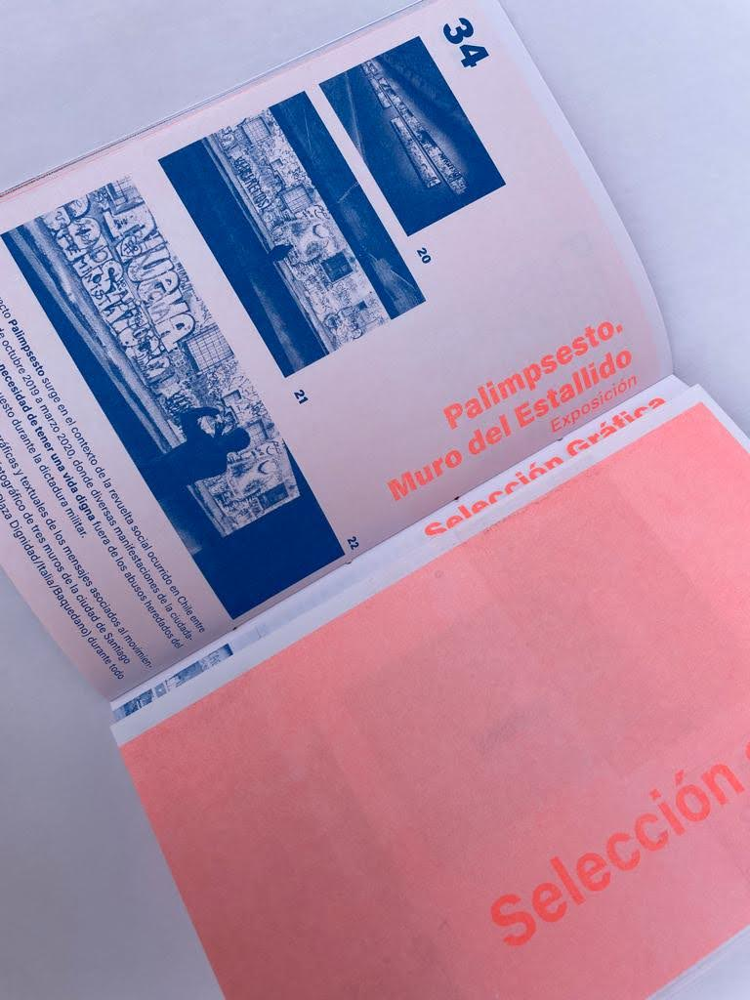

 


Evolución gráfica en Chile
El proyecto se basa en crear un fanzine, en algún tema de libre elección. El enfoque que nuestro equipo le dio al trabajo, es sobre la gráfica en Chile desde el año 1973 al 2020. Además, cabe destacar que el presente proyecto es un encargo de la clase, por lo que posteriormente, se realizó una votación para seleccionar entre todos los trabajos del curso, aquellos que serían impresos en risografía, siendo el nuestro el ganador.
- Integrantes: Aylen Bassaletti, Barbara Iriarte y Denisse Navarrete.
- Fecha: 28/06/2022
- Temática Editorial
- Recursos usados: Illutrator, Photoshop, InDesing, risografia.